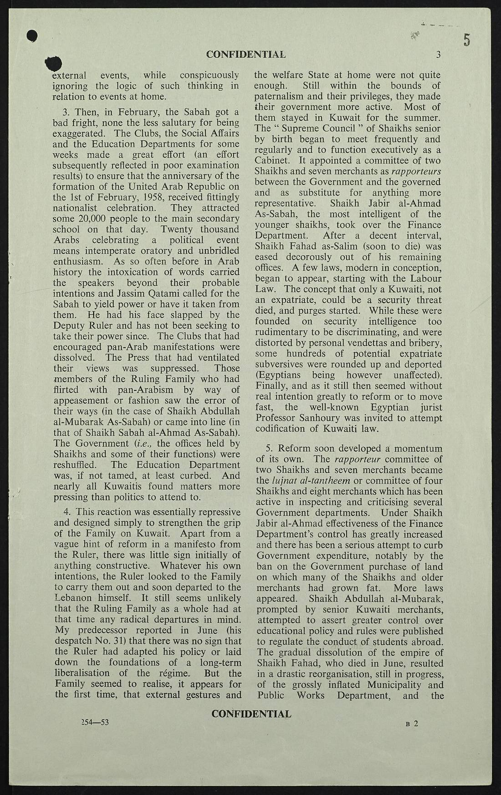
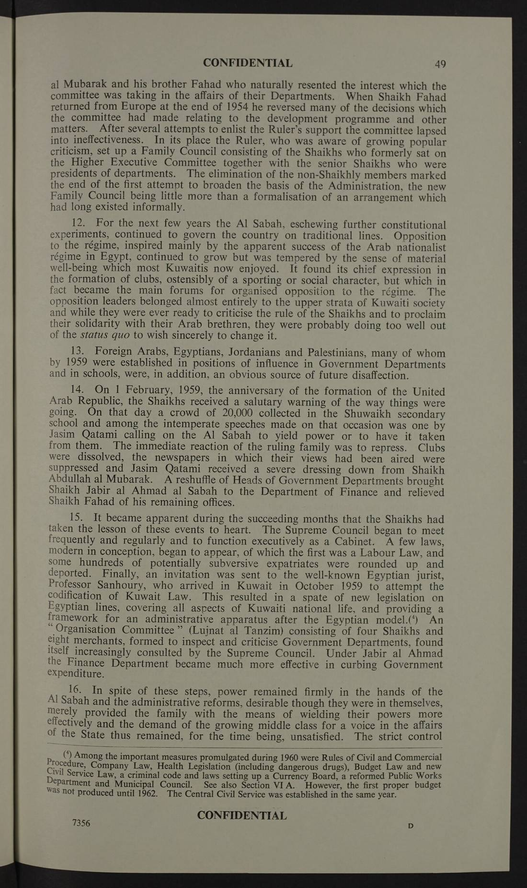
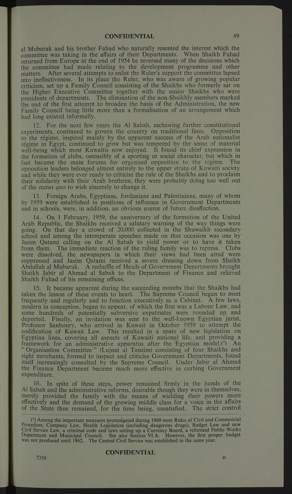

On the anniversary of the United Arab Republic, about 20,000 people gathered at Shuwaikh Secondary School. Jassim Qatami spoke, calling on the Al Sabah to yield power. The clubs were closed, the press suspended, and Jassim was rebuked by Sheikh Abdullah Al-Mubarak.
Why it matters
The British side of a turning point in Kuwait's road to its constitution, with Jassim at its centre. It appears in five separate files.
Who is meant
The same Jassim Al-Qatami as the records that give his full name: Director of Police, resigned at Suez, later a nationalist member of the National Assembly.
Page copies

FO 371/148896, p. 6FO 371/148896, p. 10FO 371/148896, p. 72

FO 464/49, p. 382FO 464/50, p. 59

FO 464/51, p. 58FO 371/148911, p. 19
Original text
FO 464/49, page 382 (the same text in FO 464/50 page 59 and FO 464/51 page 58):
14. On 1 February, 1959, the anniversary of the formation of the United Arab Republic, the Shaikhs received a salutary warning of the way things were going. On that day a crowd of 20,000 collected in the Shuwaikh secondary school and among the intemperate speeches made on that occasion was one by Jasim Qatami calling on the Al Sabah to yield power or to have it taken from them. The immediate reaction of the ruling family was to repress. Clubs were dissolved, the newspapers in which their views had been aired were suppressed and Jasim Qatami received a severe dressing down from Shaikh Abdullah al Mubarak.
FO 371/148896, page 72, chronology for 1959:
February 1. "Unity Day" speeches at Secondary School, Shuwaikh, organised by the Committee of the Clubs. Jasim Qatami and Ahmad Sa'id (of Sawt al-Arab) spoke against the regime.
February 2 to 4. Press suspended; all clubs closed; "Kuwaiti League" dissolved; seven leading Reformists rebuked by Shaikh Abdullah al-Mubarak As-Sabah.
English translation
الملف FO 464/49، الصفحة ٣٨٢ (والنص نفسه في FO 464/50 الصفحة ٥٩ وFO 464/51 الصفحة ٥٨):
١٤. في الأول من فبراير ١٩٥٩، ذكرى قيام الجمهورية العربية المتحدة، تلقى الشيوخ تحذيرا مفيدا من اتجاه الأمور. ففي ذلك اليوم تجمع حشد من ٢٠ ألف شخص في ثانوية الشويخ، وكان من بين الخطب الحادة التي أُلقيت يومها خطاب لجاسم القطامي يدعو فيه آل الصباح إلى التخلي عن السلطة وإلا انتُزعت منهم. وكان رد فعل الأسرة الحاكمة الفوري هو القمع، فحُلّت الأندية، وأُوقفت الصحف التي نشرت آراءهم، وتلقى جاسم القطامي توبيخا شديدا من الشيخ عبدالله المبارك.
الملف FO 371/148896، الصفحة ٧٢، تسلسل أحداث ١٩٥٩:
١ فبراير: خطب «يوم الوحدة» في ثانوية الشويخ، نظمتها لجنة الأندية. وتحدث جاسم القطامي وأحمد سعيد (من صوت العرب) ضد النظام.
٢ إلى ٤ فبراير: تعطيل الصحف، وإغلاق جميع الأندية، وحل «الرابطة الكويتية»، وتوبيخ الشيخ عبدالله المبارك الصباح لسبعة من قادة الإصلاحيين.
Others named
Ahmad Said
Sources
The National Archives, London, digitised by the Arabian Gulf Digital Archive (agda.ae). Images reproduced by permission of The National Archives, London, England.
Archive reference
FO 371/148896 · Persian Gulf: annual reviews for 1959
FO 464/49 · Arabia: historical summary of events in the Persian Gulf Sheikhdoms and the Sultanate of Muscat and Oman, together with a collection of oil agreements and connected documents, 1953-1964
FO 464/50 · Arabia: historical summary of events in the Persian Gulf Sheikhdoms and the Sultanate of Muscat and Oman, 1953-1964; volume 1, chapters 1-6
FO 464/51 · Arabia: historical summary of events in the Persian Gulf Sheikhdoms and the Sultanate of Muscat and Oman, 1953-1964; volume 1, chapters 1-6
FO 371/148911 · Internal Political Situation: Kuwait
How this text was made: Typed from the archive's own text reading of the scan, corrected against the scan where the reading was garbled. … marks text left out. Arabic translation by Claude; please review.